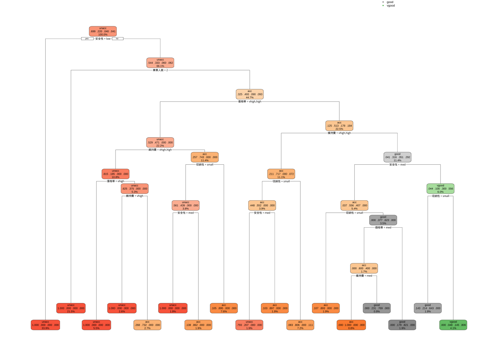
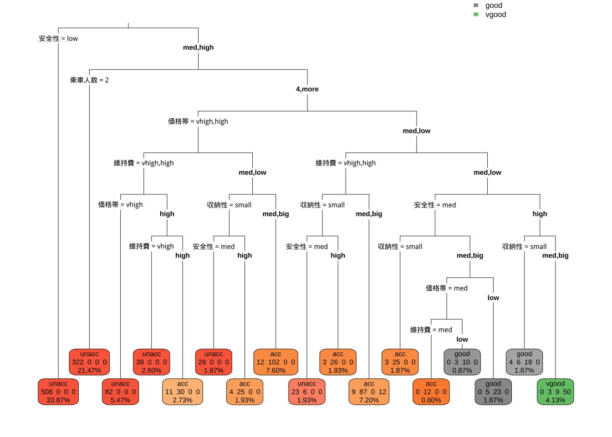

8 決定木分析
決定木 (decision tree) は, 学習データに含まれる説明変数空間を, 目的変数との関係に基づいて (目的変数がなるべく均質になるように) 階層的に分割する手法である.
この分割は, 目的関数（回帰問題であればMSEなど, 分類問題であればGini不純度等）を最適化するように, 一回につき1変数, 学習データに基づいて逐次行われる.
逐次分割のルールは, 木構造で表現される.
- ルートノード： 木の最上部. データセット全体を表現
- (内部) ノード： データセットの分割条件 (質問や条件)を表現. データセットが分割される
- リーフノード （末端ノード）: 分類されたデータセットの最終的な出力を表現. これ以上の分割は行われない
「決定木はデータセットの分割ルールを自動生成する」 という説明がなされることがあるが, 不正確であることに注意が必要である.
正確には, 生成されるのは「説明変数空間の分割規則」であり, 分割後の各領域に対応した予測値（分類ラベルや回帰適合値） が付与されているに過ぎない.
決定木分析を行う標準的な関数として,
パッケージrpartの関数rpart()がある.
回帰木, 分類木どちらにも適用可能である.
8.1 導入: 回帰木 vs 線形回帰
データセット1: 自動車の制動距離
決定木の特徴を理解するため, 金明哲(2017)『Rによるデータサイエンス』でも紹介されている 例を取り上げる.
Rに標準的に含まれているデータセットcarsを使い,
ブレーキをかけて停止するまでの移動距離を目的変数,
自動車の速度を説明変数とする場合の,
線形回帰と決定木 (回帰木) の適合の結果を比較する.
- cars
- speed: 自動車の速度 (mph)
- dist: ブレーキをかけて自動車が停止するまでの距離 (feet)
- Rの標準データセット#cars
head(cars); tail(cars)
#> speed dist
#> 1 4 2
#> 2 4 10
#> 3 7 4
#> 4 7 22
#> 5 8 16
#> 6 9 10
#> speed dist
#> 45 23 54
#> 46 24 70
#> 47 24 92
#> 48 24 93
#> 49 24 120
#> 50 25 85
#cars["speed"]
plot(cars)
- 単回帰分析 すでに上で解説した通りの操作を行う.
# 単回帰分析
cars_lm <- lm(dist ~ speed, data = cars)
summary(cars_lm)
#>
#> Call:
#> lm(formula = dist ~ speed, data = cars)
#>
#> Residuals:
#> Min 1Q Median 3Q Max
#> -29.069 -9.525 -2.272 9.215 43.201
#>
#> Coefficients:
#> Estimate Std. Error t value Pr(>|t|)
#> (Intercept) -17.5791 6.7584 -2.601 0.0123 *
#> speed 3.9324 0.4155 9.464 1.49e-12 ***
#> ---
#> Signif. codes: 0 '***' 0.001 '**' 0.01 '*' 0.05 '.' 0.1 ' ' 1
#>
#> Residual standard error: 15.38 on 48 degrees of freedom
#> Multiple R-squared: 0.6511, Adjusted R-squared: 0.6438
#> F-statistic: 89.57 on 1 and 48 DF, p-value: 1.49e-12
# 回帰係数の取り出し
cars_lm$coef
#> (Intercept) speed
#> -17.579095 3.932409
coefficients(cars_lm)
#> (Intercept) speed
#> -17.579095 3.932409
# 回帰直線の図示
plot(cars)
abline(cars_lm)
# モデル診断（残差プロット等)
# plot(cars_lm)
# 4枚表示: 残差vs Y適合値, 残差 vs Q - Qプロット,
# 残差平方根 vs Y適合値, 残差 vs 影響力(てこ値とCook距離)- 予測
# 学習データに対する適合値 (内挿予測)
cars_pred <- predict(cars_lm)
# 残差
cars_resd <- residuals(cars_lm)
# 予測値 vs 残差
plot(cars_pred, cars_resd); abline(h = 0, lty = 2)
data.frame(cars, cars_pred, cars_resd)
#> speed dist cars_pred cars_resd
#> 1 4 2 -1.849460 3.849460
#> 2 4 10 -1.849460 11.849460
#> 3 7 4 9.947766 -5.947766
#> 4 7 22 9.947766 12.052234
#> 5 8 16 13.880175 2.119825
#> 6 9 10 17.812584 -7.812584
#> 7 10 18 21.744993 -3.744993
#> 8 10 26 21.744993 4.255007
#> 9 10 34 21.744993 12.255007
#> 10 11 17 25.677401 -8.677401
#> 11 11 28 25.677401 2.322599
#> 12 12 14 29.609810 -15.609810
#> 13 12 20 29.609810 -9.609810
#> 14 12 24 29.609810 -5.609810
#> 15 12 28 29.609810 -1.609810
#> 16 13 26 33.542219 -7.542219
#> 17 13 34 33.542219 0.457781
#> 18 13 34 33.542219 0.457781
#> 19 13 46 33.542219 12.457781
#> 20 14 26 37.474628 -11.474628
#> 21 14 36 37.474628 -1.474628
#> 22 14 60 37.474628 22.525372
#> 23 14 80 37.474628 42.525372
#> 24 15 20 41.407036 -21.407036
#> 25 15 26 41.407036 -15.407036
#> 26 15 54 41.407036 12.592964
#> 27 16 32 45.339445 -13.339445
#> 28 16 40 45.339445 -5.339445
#> 29 17 32 49.271854 -17.271854
#> 30 17 40 49.271854 -9.271854
#> 31 17 50 49.271854 0.728146
#> 32 18 42 53.204263 -11.204263
#> 33 18 56 53.204263 2.795737
#> 34 18 76 53.204263 22.795737
#> 35 18 84 53.204263 30.795737
#> 36 19 36 57.136672 -21.136672
#> 37 19 46 57.136672 -11.136672
#> 38 19 68 57.136672 10.863328
#> 39 20 32 61.069080 -29.069080
#> 40 20 48 61.069080 -13.069080
#> 41 20 52 61.069080 -9.069080
#> 42 20 56 61.069080 -5.069080
#> 43 20 64 61.069080 2.930920
#> 44 22 66 68.933898 -2.933898
#> 45 23 54 72.866307 -18.866307
#> 46 24 70 76.798715 -6.798715
#> 47 24 92 76.798715 15.201285
#> 48 24 93 76.798715 16.201285
#> 49 24 120 76.798715 43.201285
#> 50 25 85 80.731124 4.2688768.1.1 基本操作: 回帰木
シンタックスはそのままで,
lm()の代わりにrpart()と書き換えれば,
回帰木が適合される.
library(rpart)
cars_rp <- rpart(dist ~ speed, data = cars)
summary(cars_rp) # ==> 葉3枚
#> Call:
#> rpart(formula = dist ~ speed, data = cars)
#> n= 50
#>
#> CP nsplit rel error xerror xstd
#> 1 0.4676398 0 1.0000000 1.0562244 0.2284800
#> 2 0.1104944 1 0.5323602 0.7950838 0.1832721
#> 3 0.0100000 2 0.4218658 0.5456963 0.1347149
#>
#> Variable importance
#> speed
#> 100
#>
#> Node number 1: 50 observations, complexity param=0.4676398
#> mean=42.98, MSE=650.7796
#> left son=2 (31 obs) right son=3 (19 obs)
#> Primary splits:
#> speed < 17.5 to the left, improve=0.4676398, (0 missing)
#>
#> Node number 2: 31 observations, complexity param=0.1104944
#> mean=29.32258, MSE=267.9605
#> left son=4 (15 obs) right son=5 (16 obs)
#> Primary splits:
#> speed < 12.5 to the left, improve=0.4328244, (0 missing)
#>
#> Node number 3: 19 observations
#> mean=65.26316, MSE=474.5097
#>
#> Node number 4: 15 observations
#> mean=18.2, MSE=78.42667
#>
#> Node number 5: 16 observations
#> mean=39.75, MSE=220.9375
plot(cars_rp, uniform = T, margin = 0.05)
text(cars_rp, all = T, use.n = T)
決定木の主要な出力は, 分割ルールである.
今回は, 量的説明変数が一つ (speed) のみのケースであった.
適合の結果, speedの領域を
- 【分割1】speedが17.5未満か/以上か
- 【分割2】(speedが17.5未満の領域に対して) speedが12.5未満か/以上か
のように2回分割して, 分割を終了した. 結果的に, 木の深さが2, リーフノード (末端ノード) が3個の小さな木である.
- 予測
予測値は線形回帰等と同様, 関数
predict()にrpart()の結果オブジェクトを与えることで得られる.
# 学習用データに対する適合値 (内挿予測)
cars_rp_pred <- predict(cars_rp)
cars_rp_fitted <- data.frame(cars$speed, cars_rp_pred)
plot(cars$speed, cars$dist)
lines(cars_rp_fitted, type = "s")
図は, 得られた (説明変数空間の) 分割ルールでは, 横軸 (説明変数speed)
は3つの領域に分割され (12.5, 17.5が境界点),
それぞれの領域における予測値は, 一定である (左から順に, 18.2, 39.75, 65.26).
この目的変数distに対する説明変数speedの区分一定 (piecewise constant)
な形状は, 予測値を具体的に出力することでも確認できる.
# 観測値, 線形回帰の適合値, 回帰木の適合値
data.frame(cars, cars_pred, cars_rp_fitted)
#> speed dist cars_pred cars.speed cars_rp_pred
#> 1 4 2 -1.849460 4 18.20000
#> 2 4 10 -1.849460 4 18.20000
#> 3 7 4 9.947766 7 18.20000
#> 4 7 22 9.947766 7 18.20000
#> 5 8 16 13.880175 8 18.20000
#> 6 9 10 17.812584 9 18.20000
#> 7 10 18 21.744993 10 18.20000
#> 8 10 26 21.744993 10 18.20000
#> 9 10 34 21.744993 10 18.20000
#> 10 11 17 25.677401 11 18.20000
#> 11 11 28 25.677401 11 18.20000
#> 12 12 14 29.609810 12 18.20000
#> 13 12 20 29.609810 12 18.20000
#> 14 12 24 29.609810 12 18.20000
#> 15 12 28 29.609810 12 18.20000
#> 16 13 26 33.542219 13 39.75000
#> 17 13 34 33.542219 13 39.75000
#> 18 13 34 33.542219 13 39.75000
#> 19 13 46 33.542219 13 39.75000
#> 20 14 26 37.474628 14 39.75000
#> 21 14 36 37.474628 14 39.75000
#> 22 14 60 37.474628 14 39.75000
#> 23 14 80 37.474628 14 39.75000
#> 24 15 20 41.407036 15 39.75000
#> 25 15 26 41.407036 15 39.75000
#> 26 15 54 41.407036 15 39.75000
#> 27 16 32 45.339445 16 39.75000
#> 28 16 40 45.339445 16 39.75000
#> 29 17 32 49.271854 17 39.75000
#> 30 17 40 49.271854 17 39.75000
#> 31 17 50 49.271854 17 39.75000
#> 32 18 42 53.204263 18 65.26316
#> 33 18 56 53.204263 18 65.26316
#> 34 18 76 53.204263 18 65.26316
#> 35 18 84 53.204263 18 65.26316
#> 36 19 36 57.136672 19 65.26316
#> 37 19 46 57.136672 19 65.26316
#> 38 19 68 57.136672 19 65.26316
#> 39 20 32 61.069080 20 65.26316
#> 40 20 48 61.069080 20 65.26316
#> 41 20 52 61.069080 20 65.26316
#> 42 20 56 61.069080 20 65.26316
#> 43 20 64 61.069080 20 65.26316
#> 44 22 66 68.933898 22 65.26316
#> 45 23 54 72.866307 23 65.26316
#> 46 24 70 76.798715 24 65.26316
#> 47 24 92 76.798715 24 65.26316
#> 48 24 93 76.798715 24 65.26316
#> 49 24 120 76.798715 24 65.26316
#> 50 25 85 80.731124 25 65.26316分割ルールを, 未学習のデータセットに対して適用してみる.
speedの値が, それぞれ, 5,6,21 (mph) の時の予測値は
以下の通りである.
予測値は, 順に18.2, 18.2, 65.26である. スピードが5でも6でも同じ静止距離 (18.2) と予測している.
すなわち, 制止までの距離が速度の変化に対して連続的に変化するような今回の事例においては, 区分一定な予測を行う回帰木の使用は明らかに不適切である.
8.2 回帰木
データセット2: ワイン品質データ
- winequality-white.csv
- fixed acidity: 酢酸濃度
- volitle acidity: 揮発酸濃度
- citric acidity: クエン酸濃度
- chlorides: 塩化物
- sulfur dioxide: 二酸化硫黄
- sulphate: 硫酸塩
- fixed acidity: 酒石酸含有量（g/dm3)
- volatile acidity: 酢酸含有量（g/dm3)
- citric acid: クエン酸含有量（g/dm3)
- residual sugar: 残留糖分含有量（g/dm3）
- chlorides: 塩化ナトリウム含有量（g/dm3)
- free sulfur dioxide: 遊離亜硫酸含有量（mg/dm3）
- total sulfur dioxide: 総亜硫酸含有量（mg/dm3）
- density: 密度（g/dm3)
- pH: pH
- sulphates: 硫酸カリウム含有量（g/dm3）
- alcohol: アルコール度数（% vol.）
- quality: ワインの品質 (0 (very bad) -- 10 (excellent))全データセットを学習用とテスト用にランダムに分割.
wine <- read.csv("winequality-white.csv", sep = ";", skip = 1, header = T)
set.seed(100)
smpl_idx <- sample(1:nrow(wine), 3000) # 元データ(行番号)から3000件を非復元抽出
wine_train <- wine[smpl_idx, ] # 学習用データセット
wine_test <- wine[ - smpl_idx, ] # テスト用データセット
str(wine)
#> 'data.frame': 4898 obs. of 12 variables:
#> $ fixed.acidity : num 7 6.3 8.1 7.2 7.2 8.1 6.2 7 6.3 8.1 ...
#> $ volatile.acidity : num 0.27 0.3 0.28 0.23 0.23 0.28 0.32 0.27 0.3 0.22 ...
#> $ citric.acid : num 0.36 0.34 0.4 0.32 0.32 0.4 0.16 0.36 0.34 0.43 ...
#> $ residual.sugar : num 20.7 1.6 6.9 8.5 8.5 6.9 7 20.7 1.6 1.5 ...
#> $ chlorides : num 0.045 0.049 0.05 0.058 0.058 0.05 0.045 0.045 0.049 0.044 ...
#> $ free.sulfur.dioxide : num 45 14 30 47 47 30 30 45 14 28 ...
#> $ total.sulfur.dioxide: num 170 132 97 186 186 97 136 170 132 129 ...
#> $ density : num 1.001 0.994 0.995 0.996 0.996 ...
#> $ pH : num 3 3.3 3.26 3.19 3.19 3.26 3.18 3 3.3 3.22 ...
#> $ sulphates : num 0.45 0.49 0.44 0.4 0.4 0.44 0.47 0.45 0.49 0.45 ...
#> $ alcohol : num 8.8 9.5 10.1 9.9 9.9 10.1 9.6 8.8 9.5 11 ...
#> $ quality : int 6 6 6 6 6 6 6 6 6 6 ...
hist(wine$quality)
回帰木の適合
library(rpart)
wine_rp <- rpart(quality ~ . , data = wine_train) # quality以外の変数を説明変数に使用
wine_rp
#> n= 3000
#>
#> node), split, n, deviance, yval
#> * denotes terminal node
#>
#> 1) root 3000 2320.0400 5.880333
#> 2) alcohol< 10.85 1883 1106.7690 5.612852
#> 4) volatile.acidity>=0.2525 985 464.4934 5.358376 *
#> 5) volatile.acidity< 0.2525 898 508.5223 5.891982
#> 10) volatile.acidity>=0.2075 437 217.9405 5.720824 *
#> 11) volatile.acidity< 0.2075 461 265.6443 6.054230
#> 22) residual.sugar< 12.575 369 183.0244 5.926829 *
#> 23) residual.sugar>=12.575 92 52.6087 6.565217 *
#> 3) alcohol>=10.85 1117 851.4396 6.331244
#> 6) free.sulfur.dioxide< 11.5 66 67.5303 5.378788 *
#> 7) free.sulfur.dioxide>=11.5 1051 720.2759 6.391056
#> 14) alcohol< 12.45 795 512.6717 6.275472 *
#> 15) alcohol>=12.45 256 164.0000 6.750000 *得られた回帰木の可視化
決定木は, 説明変数の空間を分割するルールを生成する手法であり, 解釈容易性が強みである. 解釈容易性を助けるため, 生成されたルールを表す木を表示するための関数が用意されている.


CP表 (Complexity Parameter Table)
plotcp() の横軸は CP（complexity parameter）で,
CP が小さい (右に進む) ほど木は複雑になり,
交差検証誤差（縦軸）がどの程度変化するかを示す.
通常, 木を複雑にしていくと誤差は一度減少するが, 過度に複雑にすると過学習により誤差が悪化することがある.
「最良の cp」として, 標準的には以下のような方法が提案されている:
- 最小の 縦軸の値 (xerror) を与える cpを選ぶ
- “1-標準誤差ルール”: 最小の xerror の 1 標準誤差以内に収まる範囲で 最も単純な木 (＝最も大きい cp) を選ぶ
なお, plotcp()は, “1-標準誤差ルール”にしたがって, 最小のxerrorプラス1標準誤差の値の大きさを点線で表される水平線で表現しており,
これを下回る最初 (一番左) の cp を見つければ良い.
# CP値 vs 交差検証 (CV) 予測誤差
printcp(wine_rp)
#>
#> Regression tree:
#> rpart(formula = quality ~ ., data = wine_train)
#>
#> Variables actually used in tree construction:
#> [1] alcohol free.sulfur.dioxide residual.sugar
#> [4] volatile.acidity
#>
#> Root node error: 2320/3000 = 0.77335
#>
#> n= 3000
#>
#> CP nsplit rel error xerror xstd
#> 1 0.155959 0 1.00000 1.00109 0.027711
#> 2 0.057651 1 0.84404 0.84827 0.026277
#> 3 0.027428 2 0.78639 0.80140 0.025794
#> 4 0.018795 3 0.75896 0.77812 0.024591
#> 5 0.011842 4 0.74017 0.75908 0.024127
#> 6 0.010000 6 0.71648 0.74854 0.023784
plotcp(wine_rp) 
手動による剪定例
関数prune()を使うことで, 事前に指定した停止ルールによるアルゴリズムによる自動的な木構造の決定のあと, 事後的に枝を切ることで木の大きさを小さく整える (剪定する) ことができる.
剪定には, 上述のcpの大きさを指定する.
ここでは, 例示のため, cpを大きめに取ってみる (→ 結果的にリーフの数が3枚になる)
# 手動による剪定例 (complex parameter(cp)の大きさに基づいて)
wine_rp1 <- prune(wine_rp, cp = 0.03)
plot(wine_rp1, uniform = T, margin = 0.05)
text(wine_rp1, all = T, use.n = T)
予測
内挿予測には, 関数predict()使用する.
# 学習データによる予測の精度
wine_rp_train <- predict(wine_rp)
cor(wine_rp_train, wine_train$quality)
#> [1] 0.5324631さらに, predict()の第二引数 (newdata) に対して, 先に取り分けて学習に使わなかったテスト用データセット
wine_testを指定することで, 外挿予測を行うことができる.
# パフォーマンス評価
wine_rp_pred <- predict(wine_rp, wine_test)
summary(wine_rp_pred)
#> Min. 1st Qu. Median Mean 3rd Qu. Max.
#> 5.358 5.358 5.721 5.870 6.275 6.750
summary(wine_test$quality)
#> Min. 1st Qu. Median Mean 3rd Qu. Max.
#> 3.000 5.000 6.000 5.874 6.000 9.000
summary(wine_rp_pred)
#> Min. 1st Qu. Median Mean 3rd Qu. Max.
#> 5.358 5.358 5.721 5.870 6.275 6.750
cor(wine_rp_pred, wine_test$quality)
#> [1] 0.5093653
# plot(wine_test$quality, wine_rp_pred)自主課題 上で得られた決定木を解釈してみよう.
8.3 分類木
データセット3: 自動車評価データ
- car.data.txt
- Class (評価, 4水準), unacc, acc, good, vgood
- buying (価格帯, 4): vhigh, high, med, low.
- maint (維持費, 4): vhigh, high, med, low.
- doors (ドア数, 4): 2, 3, 4, 5more.
- persons (乗車人数, 3): 2, 4, more.
- lug_boot (収納性, 3): small, med, big.
- safety (安全性, 3): low, med, high.
- source: https://archive.ics.uci.edu/ml/datasets/Car+Evaluation
- 注) factorの並び (Levels) はデフォルトではアルファベット順library(rpart)
cardata0 <- read.csv("car.data.txt", skip = 6)
attach(cardata0)
# factorの並び(Levels)はデフォルトではアルファベット順
# → 好ましくない～好ましいの順に, 並べ替え
評価 <- factor(Class, levels = c("unacc", "acc", "good", "vgood"))
価格帯 <- factor(buying, levels = c("vhigh", "high", "med", "low"))
維持費 <- factor(maint, levels = c("vhigh", "high", "med", "low"))
ドア数 <- factor(doors, levels = c("2", "3", "4", "5more"))
乗車人数 <- factor(persons, levels = c("2", "4", "more"))
収納性 <- factor(lug_boot, levels = c("small", "med", "big"))
安全性 <- factor(safety, levels = c("low", "med", "high"))
#
cardata1 <- data.frame(評価, 価格帯, 維持費, ドア数, 乗車人数, 収納性, 安全性)
head(cardata1)
#> 評価 価格帯 維持費 ドア数 乗車人数 収納性 安全性
#> 1 unacc vhigh vhigh 2 2 small low
#> 2 unacc vhigh vhigh 2 2 small med
#> 3 unacc vhigh vhigh 2 2 small high
#> 4 unacc vhigh vhigh 2 2 med low
#> 5 unacc vhigh vhigh 2 2 med med
#> 6 unacc vhigh vhigh 2 2 med highデータセットの分割
全データセットを学習用とテスト用にランダムに分割.
# 元データを, 学習用データとテスト用データに分割
# 学習用データでモデルに学習させる
set.seed(100)
smpl_idx <- sample(1:nrow(cardata1), 1500) # 元データ(行番号)から1500件を非復元抽出
car_train <- cardata1[smpl_idx, ] # 学習用データセット, 1500件
car_test <- cardata1[ - smpl_idx, ] # テスト用データセット, 残り学習用データセットで訓練 (学習) する.
cardata <- car_train
table(car_train[, c("評価", "価格帯")])
#> 価格帯
#> 評価 vhigh high med low
#> unacc 307 281 239 221
#> acc 65 92 94 79
#> good 0 0 20 40
#> vgood 0 0 24 38
table(car_train[, c("評価", "維持費")])
#> 維持費
#> 評価 vhigh high med low
#> unacc 310 270 235 233
#> acc 60 89 102 79
#> good 0 0 22 38
#> vgood 0 12 25 25
table(car_train[, c("評価", "ドア数")])
#> ドア数
#> 評価 2 3 4 5more
#> unacc 282 263 255 248
#> acc 74 82 86 88
#> good 14 15 16 15
#> vgood 10 13 19 20
table(car_train[, c("評価", "乗車人数")])
#> 乗車人数
#> 評価 2 4 more
#> unacc 494 283 271
#> acc 0 169 161
#> good 0 31 29
#> vgood 0 29 33
table(car_train[, c("評価", "収納性")]) # balanced
#> 収納性
#> 評価 small med big
#> unacc 393 341 314
#> acc 94 112 124
#> good 18 24 18
#> vgood 0 24 38分類木の適合
res_rp <- rpart(評価 ~ ., data = car_train)
summary(res_rp)
#> Call:
#> rpart(formula = 評価 ~ ., data = car_train)
#> n= 1500
#>
#> CP nsplit rel error xerror xstd
#> 1 0.12389381 0 1.0000000 1.0000000 0.03931568
#> 2 0.11283186 2 0.7522124 0.9181416 0.03833142
#> 3 0.04535398 4 0.5265487 0.5265487 0.03130647
#> 4 0.03982301 6 0.4358407 0.4889381 0.03037018
#> 5 0.03097345 7 0.3960177 0.4137168 0.02830539
#> 6 0.02876106 9 0.3340708 0.3805310 0.02730104
#> 7 0.02101770 10 0.3053097 0.3429204 0.02608212
#> 8 0.01880531 12 0.2632743 0.3163717 0.02516366
#> 9 0.01327434 14 0.2256637 0.2389381 0.02214866
#> 10 0.01000000 16 0.1991150 0.2212389 0.02137371
#>
#> Variable importance
#> 安全性 乗車人数 維持費 収納性 価格帯 ドア数
#> 30 28 20 10 10 1
#>
#> Node number 1: 1500 observations, complexity param=0.1238938
#> predicted class=unacc expected loss=0.3013333 P(node) =1
#> class counts: 1048 330 60 62
#> probabilities: 0.699 0.220 0.040 0.041
#> left son=2 (508 obs) right son=3 (992 obs)
#> Primary splits:
#> 安全性 splits as LRR, improve=109.468500, (0 missing)
#> 乗車人数 splits as LRR, improve=104.970300, (0 missing)
#> 価格帯 splits as LLRR, improve= 17.172040, (0 missing)
#> 維持費 splits as LLRR, improve= 14.140400, (0 missing)
#> 収納性 splits as LRR, improve= 7.005849, (0 missing)
#>
#> Node number 2: 508 observations
#> predicted class=unacc expected loss=0 P(node) =0.3386667
#> class counts: 508 0 0 0
#> probabilities: 1.000 0.000 0.000 0.000
#>
#> Node number 3: 992 observations, complexity param=0.1238938
#> predicted class=unacc expected loss=0.4556452 P(node) =0.6613333
#> class counts: 540 330 60 62
#> probabilities: 0.544 0.333 0.060 0.062
#> left son=6 (322 obs) right son=7 (670 obs)
#> Primary splits:
#> 乗車人数 splits as LRR, improve=155.34520, (0 missing)
#> 価格帯 splits as LLRR, improve= 26.05666, (0 missing)
#> 維持費 splits as LLRR, improve= 19.14227, (0 missing)
#> 安全性 splits as -LR, improve= 11.33566, (0 missing)
#> 収納性 splits as LRR, improve= 11.03210, (0 missing)
#>
#> Node number 6: 322 observations
#> predicted class=unacc expected loss=0 P(node) =0.2146667
#> class counts: 322 0 0 0
#> probabilities: 1.000 0.000 0.000 0.000
#>
#> Node number 7: 670 observations, complexity param=0.1128319
#> predicted class=acc expected loss=0.5074627 P(node) =0.4466667
#> class counts: 218 330 60 62
#> probabilities: 0.325 0.493 0.090 0.093
#> left son=14 (333 obs) right son=15 (337 obs)
#> Primary splits:
#> 価格帯 splits as LLRR, improve=38.596470, (0 missing)
#> 維持費 splits as LLRR, improve=29.807250, (0 missing)
#> 収納性 splits as LRR, improve=17.341050, (0 missing)
#> 安全性 splits as -LR, improve=15.372940, (0 missing)
#> ドア数 splits as LRRR, improve= 4.288712, (0 missing)
#> Surrogate splits:
#> ドア数 splits as RLRR, agree=0.516, adj=0.027, (0 split)
#> 安全性 splits as -LR, agree=0.510, adj=0.015, (0 split)
#> 乗車人数 splits as -LR, agree=0.509, adj=0.012, (0 split)
#> 維持費 splits as RRRL, agree=0.507, adj=0.009, (0 split)
#> 収納性 splits as LRR, agree=0.504, adj=0.003, (0 split)
#>
#> Node number 14: 333 observations, complexity param=0.1128319
#> predicted class=unacc expected loss=0.4714715 P(node) =0.222
#> class counts: 176 157 0 0
#> probabilities: 0.529 0.471 0.000 0.000
#> left son=28 (162 obs) right son=29 (171 obs)
#> Primary splits:
#> 維持費 splits as LLRR, improve=51.712340, (0 missing)
#> 収納性 splits as LRR, improve=14.322380, (0 missing)
#> 安全性 splits as -LR, improve=12.358880, (0 missing)
#> 価格帯 splits as LR--, improve= 5.866990, (0 missing)
#> ドア数 splits as LRRR, improve= 2.000571, (0 missing)
#> Surrogate splits:
#> ドア数 splits as RRLR, agree=0.520, adj=0.012, (0 split)
#> 収納性 splits as LRR, agree=0.517, adj=0.006, (0 split)
#>
#> Node number 15: 337 observations, complexity param=0.04535398
#> predicted class=acc expected loss=0.4866469 P(node) =0.2246667
#> class counts: 42 173 60 62
#> probabilities: 0.125 0.513 0.178 0.184
#> left son=30 (166 obs) right son=31 (171 obs)
#> Primary splits:
#> 維持費 splits as LLRR, improve=30.432380, (0 missing)
#> 安全性 splits as -LR, improve=15.159790, (0 missing)
#> 収納性 splits as LRR, improve=10.848300, (0 missing)
#> 価格帯 splits as --LR, improve= 2.920132, (0 missing)
#> ドア数 splits as LRRR, improve= 2.729825, (0 missing)
#> Surrogate splits:
#> ドア数 splits as RRRL, agree=0.513, adj=0.012, (0 split)
#> 収納性 splits as LRR, agree=0.513, adj=0.012, (0 split)
#> 安全性 splits as -LR, agree=0.513, adj=0.012, (0 split)
#>
#> Node number 28: 162 observations, complexity param=0.0210177
#> predicted class=unacc expected loss=0.1851852 P(node) =0.108
#> class counts: 132 30 0 0
#> probabilities: 0.815 0.185 0.000 0.000
#> left son=56 (82 obs) right son=57 (80 obs)
#> Primary splits:
#> 価格帯 splits as LR--, improve=11.3888900, (0 missing)
#> 維持費 splits as LR--, improve=10.8401100, (0 missing)
#> 収納性 splits as LLR, improve= 1.9067460, (0 missing)
#> 安全性 splits as -LR, improve= 0.9437920, (0 missing)
#> ドア数 splits as LLRR, improve= 0.2358401, (0 missing)
#> Surrogate splits:
#> 収納性 splits as LLR, agree=0.531, adj=0.050, (0 split)
#> ドア数 splits as LRLR, agree=0.519, adj=0.025, (0 split)
#>
#> Node number 29: 171 observations, complexity param=0.03097345
#> predicted class=acc expected loss=0.2573099 P(node) =0.114
#> class counts: 44 127 0 0
#> probabilities: 0.257 0.743 0.000 0.000
#> left son=58 (57 obs) right son=59 (114 obs)
#> Primary splits:
#> 収納性 splits as LRR, improve=15.81287000, (0 missing)
#> 安全性 splits as -LR, improve=14.94250000, (0 missing)
#> ドア数 splits as LRRR, improve= 3.05237700, (0 missing)
#> 乗車人数 splits as -RL, improve= 0.05959792, (0 missing)
#> 価格帯 splits as LR--, improve= 0.05664293, (0 missing)
#>
#> Node number 30: 166 observations, complexity param=0.01880531
#> predicted class=acc expected loss=0.2831325 P(node) =0.1106667
#> class counts: 35 119 0 12
#> probabilities: 0.211 0.717 0.000 0.072
#> left son=60 (58 obs) right son=61 (108 obs)
#> Primary splits:
#> 収納性 splits as LRR, improve=7.922795, (0 missing)
#> 安全性 splits as -LR, improve=7.674699, (0 missing)
#> ドア数 splits as LRRR, improve=2.069439, (0 missing)
#> 維持費 splits as LR--, improve=1.602410, (0 missing)
#> 価格帯 splits as --LR, improve=1.284737, (0 missing)
#>
#> Node number 31: 171 observations, complexity param=0.04535398
#> predicted class=good expected loss=0.6491228 P(node) =0.114
#> class counts: 7 54 60 50
#> probabilities: 0.041 0.316 0.351 0.292
#> left son=62 (81 obs) right son=63 (90 obs)
#> Primary splits:
#> 安全性 splits as -LR, improve=22.499420, (0 missing)
#> 収納性 splits as LRR, improve=12.487990, (0 missing)
#> 維持費 splits as --LR, improve= 4.316887, (0 missing)
#> 価格帯 splits as --LR, improve= 3.767329, (0 missing)
#> ドア数 splits as LRRR, improve= 1.797828, (0 missing)
#> Surrogate splits:
#> ドア数 splits as RRLR, agree=0.538, adj=0.025, (0 split)
#>
#> Node number 56: 82 observations
#> predicted class=unacc expected loss=0 P(node) =0.05466667
#> class counts: 82 0 0 0
#> probabilities: 1.000 0.000 0.000 0.000
#>
#> Node number 57: 80 observations, complexity param=0.0210177
#> predicted class=unacc expected loss=0.375 P(node) =0.05333333
#> class counts: 50 30 0 0
#> probabilities: 0.625 0.375 0.000 0.000
#> left son=114 (39 obs) right son=115 (41 obs)
#> Primary splits:
#> 維持費 splits as LR--, improve=21.40244000, (0 missing)
#> 収納性 splits as LLR, improve= 2.65723300, (0 missing)
#> 安全性 splits as -LR, improve= 1.91526000, (0 missing)
#> ドア数 splits as LLRR, improve= 0.56441530, (0 missing)
#> 乗車人数 splits as -LR, improve= 0.05639098, (0 missing)
#> Surrogate splits:
#> 収納性 splits as RLR, agree=0.562, adj=0.103, (0 split)
#> ドア数 splits as RLRR, agree=0.525, adj=0.026, (0 split)
#>
#> Node number 58: 57 observations, complexity param=0.03097345
#> predicted class=unacc expected loss=0.4385965 P(node) =0.038
#> class counts: 32 25 0 0
#> probabilities: 0.561 0.439 0.000 0.000
#> left son=116 (28 obs) right son=117 (29 obs)
#> Primary splits:
#> 安全性 splits as -LR, improve=21.17362000, (0 missing)
#> ドア数 splits as LRRR, improve= 1.20350900, (0 missing)
#> 乗車人数 splits as -RL, improve= 1.03815600, (0 missing)
#> 維持費 splits as --RL, improve= 0.09980507, (0 missing)
#> 価格帯 splits as LR--, improve= 0.05032432, (0 missing)
#> Surrogate splits:
#> 価格帯 splits as LR--, agree=0.526, adj=0.036, (0 split)
#> 維持費 splits as --RL, agree=0.526, adj=0.036, (0 split)
#> ドア数 splits as RRLR, agree=0.526, adj=0.036, (0 split)
#> 乗車人数 splits as -RL, agree=0.526, adj=0.036, (0 split)
#>
#> Node number 59: 114 observations
#> predicted class=acc expected loss=0.1052632 P(node) =0.076
#> class counts: 12 102 0 0
#> probabilities: 0.105 0.895 0.000 0.000
#>
#> Node number 60: 58 observations, complexity param=0.01880531
#> predicted class=acc expected loss=0.4482759 P(node) =0.03866667
#> class counts: 26 32 0 0
#> probabilities: 0.448 0.552 0.000 0.000
#> left son=120 (29 obs) right son=121 (29 obs)
#> Primary splits:
#> 安全性 splits as -LR, improve=13.7931000, (0 missing)
#> 維持費 splits as LR--, improve= 2.2068970, (0 missing)
#> ドア数 splits as LRRR, improve= 1.9956380, (0 missing)
#> 価格帯 splits as --LR, improve= 0.8277504, (0 missing)
#> 乗車人数 splits as -RL, improve= 0.3325123, (0 missing)
#> Surrogate splits:
#> 維持費 splits as LR--, agree=0.552, adj=0.103, (0 split)
#> ドア数 splits as LLRR, agree=0.534, adj=0.069, (0 split)
#>
#> Node number 61: 108 observations
#> predicted class=acc expected loss=0.1944444 P(node) =0.072
#> class counts: 9 87 0 12
#> probabilities: 0.083 0.806 0.000 0.111
#>
#> Node number 62: 81 observations, complexity param=0.02876106
#> predicted class=acc expected loss=0.4444444 P(node) =0.054
#> class counts: 3 45 33 0
#> probabilities: 0.037 0.556 0.407 0.000
#> left son=124 (28 obs) right son=125 (53 obs)
#> Primary splits:
#> 収納性 splits as LRR, improve=12.1816400, (0 missing)
#> 価格帯 splits as --LR, improve= 2.6916900, (0 missing)
#> 維持費 splits as --LR, improve= 2.2466560, (0 missing)
#> ドア数 splits as LLRR, improve= 1.5350200, (0 missing)
#> 乗車人数 splits as -RL, improve= 0.5724932, (0 missing)
#>
#> Node number 63: 90 observations, complexity param=0.03982301
#> predicted class=vgood expected loss=0.4444444 P(node) =0.06
#> class counts: 4 9 27 50
#> probabilities: 0.044 0.100 0.300 0.556
#> left son=126 (28 obs) right son=127 (62 obs)
#> Primary splits:
#> 収納性 splits as LRR, improve=18.2472100, (0 missing)
#> ドア数 splits as LLRR, improve= 3.1671560, (0 missing)
#> 維持費 splits as --LR, improve= 1.8000000, (0 missing)
#> 価格帯 splits as --LR, improve= 1.4888890, (0 missing)
#> 乗車人数 splits as -RL, improve= 0.6274484, (0 missing)
#>
#> Node number 114: 39 observations
#> predicted class=unacc expected loss=0 P(node) =0.026
#> class counts: 39 0 0 0
#> probabilities: 1.000 0.000 0.000 0.000
#>
#> Node number 115: 41 observations
#> predicted class=acc expected loss=0.2682927 P(node) =0.02733333
#> class counts: 11 30 0 0
#> probabilities: 0.268 0.732 0.000 0.000
#>
#> Node number 116: 28 observations
#> predicted class=unacc expected loss=0 P(node) =0.01866667
#> class counts: 28 0 0 0
#> probabilities: 1.000 0.000 0.000 0.000
#>
#> Node number 117: 29 observations
#> predicted class=acc expected loss=0.137931 P(node) =0.01933333
#> class counts: 4 25 0 0
#> probabilities: 0.138 0.862 0.000 0.000
#>
#> Node number 120: 29 observations
#> predicted class=unacc expected loss=0.2068966 P(node) =0.01933333
#> class counts: 23 6 0 0
#> probabilities: 0.793 0.207 0.000 0.000
#>
#> Node number 121: 29 observations
#> predicted class=acc expected loss=0.1034483 P(node) =0.01933333
#> class counts: 3 26 0 0
#> probabilities: 0.103 0.897 0.000 0.000
#>
#> Node number 124: 28 observations
#> predicted class=acc expected loss=0.1071429 P(node) =0.01866667
#> class counts: 3 25 0 0
#> probabilities: 0.107 0.893 0.000 0.000
#>
#> Node number 125: 53 observations, complexity param=0.01327434
#> predicted class=good expected loss=0.3773585 P(node) =0.03533333
#> class counts: 0 20 33 0
#> probabilities: 0.000 0.377 0.623 0.000
#> left son=250 (25 obs) right son=251 (28 obs)
#> Primary splits:
#> 価格帯 splits as --LR, improve=4.69137500, (0 missing)
#> 維持費 splits as --LR, improve=2.97708900, (0 missing)
#> ドア数 splits as LRRR, improve=2.68221700, (0 missing)
#> 収納性 splits as -LR, improve=1.42290200, (0 missing)
#> 乗車人数 splits as -LR, improve=0.04851752, (0 missing)
#> Surrogate splits:
#> 維持費 splits as --RL, agree=0.547, adj=0.04, (0 split)
#>
#> Node number 126: 28 observations
#> predicted class=good expected loss=0.3571429 P(node) =0.01866667
#> class counts: 4 6 18 0
#> probabilities: 0.143 0.214 0.643 0.000
#>
#> Node number 127: 62 observations
#> predicted class=vgood expected loss=0.1935484 P(node) =0.04133333
#> class counts: 0 3 9 50
#> probabilities: 0.000 0.048 0.145 0.806
#>
#> Node number 250: 25 observations, complexity param=0.01327434
#> predicted class=acc expected loss=0.4 P(node) =0.01666667
#> class counts: 0 15 10 0
#> probabilities: 0.000 0.600 0.400 0.000
#> left son=500 (12 obs) right son=501 (13 obs)
#> Primary splits:
#> 維持費 splits as --LR, improve=7.38461500, (0 missing)
#> ドア数 splits as LLRR, improve=0.63636360, (0 missing)
#> 収納性 splits as -LR, improve=0.11688310, (0 missing)
#> 乗車人数 splits as -LR, improve=0.05194805, (0 missing)
#> Surrogate splits:
#> ドア数 splits as RRLR, agree=0.56, adj=0.083, (0 split)
#> 収納性 splits as -RL, agree=0.56, adj=0.083, (0 split)
#>
#> Node number 251: 28 observations
#> predicted class=good expected loss=0.1785714 P(node) =0.01866667
#> class counts: 0 5 23 0
#> probabilities: 0.000 0.179 0.821 0.000
#>
#> Node number 500: 12 observations
#> predicted class=acc expected loss=0 P(node) =0.008
#> class counts: 0 12 0 0
#> probabilities: 0.000 1.000 0.000 0.000
#>
#> Node number 501: 13 observations
#> predicted class=good expected loss=0.2307692 P(node) =0.008666667
#> class counts: 0 3 10 0
#> probabilities: 0.000 0.231 0.769 0.000- CP表 (Complexity Parameter Table)

可視化
ここでは, cp=0.1に指定して適合.
library(rpart.plot)
res.rp <- rpart(評価 ~ ., data = car_train, control = rpart.control(cp = 0.1))
rpart.plot(res_rp, digit = 3) #, col = c("red", "orange", "yellow", "blue"))

パフォーマンス評価
学習済モデルを使い, テスト用データで外挿予測を行う.
car_rp_pred <- predict(res_rp, car_test, type = "class") # クラス分類の予測結果出力
#car_rp_pred <- predict(res_rp, car_test, type = "prob") # 確率の出力ここでは, パッケージcaretの関数confusionMatrix()を使い,
混同行列に基づいて各種パフォーマンス評価指標を計算する.
confusionMatrix()では,
2種類の表示モードを選択することができる:
- 適合率 (precision) - 再現率 (recall) 表示
- 感度(sensitivity) - 特異度 (specificity) 表示
# 混同行列
tbl_rp <- table(car_rp_pred, car_test$評価)
library(caret)
# 適合率 (precision) - 再現率 (recall) 表示
confusionMatrix(tbl_rp, mode = "prec_recall")
#> Confusion Matrix and Statistics
#>
#>
#> car_rp_pred unacc acc good vgood
#> unacc 159 1 0 0
#> acc 3 51 0 1
#> good 0 2 9 0
#> vgood 0 0 0 2
#>
#> Overall Statistics
#>
#> Accuracy : 0.9693
#> 95% CI : (0.9378, 0.9876)
#> No Information Rate : 0.7105
#> P-Value [Acc > NIR] : < 2.2e-16
#>
#> Kappa : 0.9306
#>
#> Mcnemar's Test P-Value : NA
#>
#> Statistics by Class:
#>
#> Class: unacc Class: acc Class: good Class: vgood
#> Precision 0.9938 0.9273 0.81818 1.000000
#> Recall 0.9815 0.9444 1.00000 0.666667
#> F1 0.9876 0.9358 0.90000 0.800000
#> Prevalence 0.7105 0.2368 0.03947 0.013158
#> Detection Rate 0.6974 0.2237 0.03947 0.008772
#> Detection Prevalence 0.7018 0.2412 0.04825 0.008772
#> Balanced Accuracy 0.9832 0.9607 0.99543 0.833333
# 感度(sensitivity) - 特異度 (specificity) 表示
confusionMatrix(tbl_rp) # mode = "sens_spec" (デフォルト)
#> Confusion Matrix and Statistics
#>
#>
#> car_rp_pred unacc acc good vgood
#> unacc 159 1 0 0
#> acc 3 51 0 1
#> good 0 2 9 0
#> vgood 0 0 0 2
#>
#> Overall Statistics
#>
#> Accuracy : 0.9693
#> 95% CI : (0.9378, 0.9876)
#> No Information Rate : 0.7105
#> P-Value [Acc > NIR] : < 2.2e-16
#>
#> Kappa : 0.9306
#>
#> Mcnemar's Test P-Value : NA
#>
#> Statistics by Class:
#>
#> Class: unacc Class: acc Class: good Class: vgood
#> Sensitivity 0.9815 0.9444 1.00000 0.666667
#> Specificity 0.9848 0.9770 0.99087 1.000000
#> Pos Pred Value 0.9938 0.9273 0.81818 1.000000
#> Neg Pred Value 0.9559 0.9827 1.00000 0.995575
#> Prevalence 0.7105 0.2368 0.03947 0.013158
#> Detection Rate 0.6974 0.2237 0.03947 0.008772
#> Detection Prevalence 0.7018 0.2412 0.04825 0.008772
#> Balanced Accuracy 0.9832 0.9607 0.99543 0.833333正答率/正解率 (accuracy) を取り出す場合:
自主課題 上で得られた決定木 (分類規則) を解釈してみよう.
関数confusionMatrix()を収録しているパッケージcaretは, 多種多様な機械学習アルゴリズムを統一的な環境で
実行し比較できる環境を提供する.
サポートベクターマシン (SVM), 勾配ブースティング, ランダムフォレスト,
ニューラルネット, …, など多様な手法・アルゴリズムをサポートする.